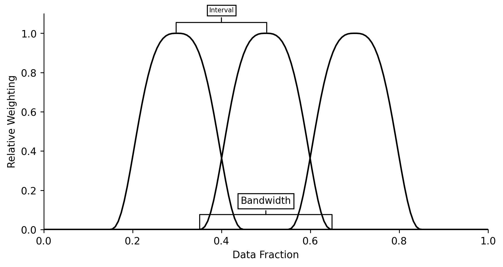

Tables & Figures Generation¶

This notebook provides a programmatic workflow for generating the tables used in the MOE paper, as well as the diagram to show the time-adaptive smoothing weights.
Imports¶
import json
import numpy as np
import pandas as pd
import matplotlib.pyplot as plt
from IPython.display import Latex, JSON
from moepy import eda, lowess
Tables¶
Power Systems Overview¶
We'll first load in the DE data
df_DE = eda.load_DE_df('../data/energy_charts.csv', '../data/ENTSOE_DE_price.csv')
df_DE.head()
| local_datetime | Biomass | Brown Coal | Gas | Hard Coal | Hydro Power | Oil | Others | Pumped Storage | Seasonal Storage | Solar | Uranium | Wind | net_balance | demand | price |
|---|---|---|---|---|---|---|---|---|---|---|---|---|---|---|---|
| 2010-01-03 23:00:00+00:00 | 3.637 | 16.533 | 4.726 | 10.078 | 2.331 | 0 | 0 | 0.052 | 0.068 | 0 | 16.826 | 0.635 | -1.229 | 53.657 | nan |
| 2010-01-04 00:00:00+00:00 | 3.637 | 16.544 | 4.856 | 8.816 | 2.293 | 0 | 0 | 0.038 | 0.003 | 0 | 16.841 | 0.528 | -1.593 | 51.963 | nan |
| 2010-01-04 01:00:00+00:00 | 3.637 | 16.368 | 5.275 | 7.954 | 2.299 | 0 | 0 | 0.032 | 0 | 0 | 16.846 | 0.616 | -1.378 | 51.649 | nan |
| 2010-01-04 02:00:00+00:00 | 3.637 | 15.837 | 5.354 | 7.681 | 2.299 | 0 | 0 | 0.027 | 0 | 0 | 16.699 | 0.63 | -1.624 | 50.54 | nan |
| 2010-01-04 03:00:00+00:00 | 3.637 | 15.452 | 5.918 | 7.498 | 2.301 | 0.003 | 0 | 0.02 | 0 | 0 | 16.635 | 0.713 | -0.731 | 51.446 | nan |
Clean it up then calculate the relevant summary statistics
s_DE_RES_output = df_DE[['Wind', 'Solar']].sum(axis=1)
s_DE_demand = df_DE['demand']
s_DE_price = df_DE['price']
s_DE_RES_pct = s_DE_RES_output/s_DE_demand
DE_2020_RES_pct = s_DE_RES_pct['2020'].mean()
DE_2020_demand_avg = s_DE_demand['2020'].mean()
DE_2020_price_avg = s_DE_price['2020'].mean()
DE_2020_RES_pct, DE_2020_demand_avg, DE_2020_price_avg
(0.3593124152992342, 55.956133452868855, 30.469415917112606)
We'll also estimate the carbon intensity
DE_fuel_to_co2_intensity = {
'Biomass': 0.39,
'Brown Coal': 0.36,
'Gas': 0.23,
'Hard Coal': 0.34,
'Hydro Power': 0,
'Oil': 0.28,
'Others': 0,
'Pumped Storage': 0,
'Seasonal Storage': 0,
'Solar': 0,
'Uranium': 0,
'Wind': 0,
'net_balance': 0
}
s_DE_emissions_tonnes = (df_DE
[DE_fuel_to_co2_intensity.keys()]
.multiply(1e3) # converting to MWh
.multiply(DE_fuel_to_co2_intensity.values())
.sum(axis=1)
)
s_DE_emissions_tonnes = s_DE_emissions_tonnes[s_DE_emissions_tonnes>2000]
s_DE_carbon_intensity = s_DE_emissions_tonnes/s_DE_demand.loc[s_DE_emissions_tonnes.index]
DE_2020_emissions_tonnes = s_DE_emissions_tonnes['2020'].mean()
DE_2020_ci_avg = s_DE_carbon_intensity['2020'].mean()
DE_2020_emissions_tonnes, DE_2020_ci_avg
(8448.292069623136, 153.80385402105972)
We'll do the same for GB
# Loading in
df_EI = pd.read_csv('../data/electric_insights.csv')
df_EI = df_EI.set_index('local_datetime')
df_EI.index = pd.to_datetime(df_EI.index, utc=True)
# Extracting RES, demand, and price series
s_GB_RES = df_EI[['wind', 'solar']].sum(axis=1)
s_GB_demand = df_EI['demand']
s_GB_price = df_EI['day_ahead_price']
# Generating carbon intensity series
GB_fuel_to_co2_intensity = {
'nuclear': 0,
'biomass': 0.121, # from EI
'coal': 0.921, # DUKES 2018 value
'gas': 0.377, # DUKES 2018 value (lower than many CCGT estimates, let alone OCGT)
'hydro': 0,
'pumped_storage': 0,
'solar': 0,
'wind': 0,
'belgian': 0.4,
'dutch': 0.474, # from EI
'french': 0.053, # from EI
'ireland': 0.458, # from EI
'northern_ireland': 0.458 # from EI
}
s_GB_emissions_tonnes = (df_EI
[GB_fuel_to_co2_intensity.keys()]
.multiply(1e3*0.5) # converting to MWh
.multiply(GB_fuel_to_co2_intensity.values())
.sum(axis=1)
)
s_GB_emissions_tonnes = s_GB_emissions_tonnes[s_GB_emissions_tonnes>2000]
s_GB_carbon_intensity = s_GB_emissions_tonnes/s_GB_demand.loc[s_GB_emissions_tonnes.index]
# Calculating 2020 averages
GB_2020_emissions_tonnes = s_GB_emissions_tonnes['2020'].mean()
GB_2020_ci_avg = s_GB_carbon_intensity['2020'].mean()
GB_2020_RES_pct = (s_GB_RES['2020']/s_GB_demand['2020']).mean()
GB_2020_demand_avg = s_GB_demand['2020'].mean()
GB_2020_price_avg = s_GB_price['2020'].mean()
Then combine the results in a single table
system_overview_data = {
'Germany': {
'Average Solar/Wind Generation (%)': round(100*DE_2020_RES_pct, 2),
'Average Demand (GW)': round(DE_2020_demand_avg, 2),
'Average Price ([EUR,GBP]/MWh)': round(DE_2020_price_avg, 2),
'Average Carbon Intensity (gCO2/kWh)': round(DE_2020_ci_avg, 2),
},
'Great Britain': {
'Average Solar/Wind Generation (%)': round(100*GB_2020_RES_pct, 2),
'Average Demand (GW)': round(GB_2020_demand_avg, 2),
'Average Price ([EUR,GBP]/MWh)': round(GB_2020_price_avg, 2),
'Average Carbon Intensity (gCO2/kWh)': round(GB_2020_ci_avg, 2),
}
}
df_system_overview = pd.DataFrame(system_overview_data).T
df_system_overview.head()
| Unnamed: 0 | Average Solar/Wind Generation (%) | Average Demand (GW) | Average Price ([EUR,GBP]/MWh) | Average Carbon Intensity (gCO2/kWh) |
|---|---|---|---|---|
| Germany | 35.93 | 55.96 | 30.47 | 153.8 |
| Great Britain | 29.83 | 30.61 | 33.77 | 101.17 |
Which we'll then output as a LaTeX table
get_lined_column_format = lambda n_cols:''.join(n_cols*['|l']) + '|'
caption = 'Systems overview for 2020'
label = 'overview_table'
column_format = get_lined_column_format(df_system_overview.shape[1]+1)
latex_str = df_system_overview.to_latex(column_format=column_format, caption=caption, label=label)
latex_replacements = {
'CO2': 'CO\\textsubscript{2}',
'\\\\\n': '\\\\ \\midrule\n',
'midrule': 'hline',
'toprule': 'hline',
'bottomrule': '',
'\n\\\n': '\n',
'\\hline\n\\hline': '\\hline'
}
for old, new in latex_replacements.items():
latex_str = latex_str.replace(old, new)
Latex(latex_str)
Carbon Intensity Estimates¶
We'll clean up our GB carbon intensity estimates
def clean_idxs(s):
s.index = s.index.str.replace('_', ' ').str.title()
return s
df_GB_non0_co2_intensity = (pd
.Series(GB_fuel_to_co2_intensity)
.replace(0, np.nan)
.dropna()
.drop(['belgian', 'northern_ireland'])
.pipe(clean_idxs)
.multiply(1e3)
.astype(int)
.to_frame()
.T
.rename({0: 'gCO2/kWh'})
)
df_GB_non0_co2_intensity
| Unnamed: 0 | Biomass | Coal | Gas | Dutch | French | Ireland |
|---|---|---|---|---|---|---|
| gCO2/kWh | 121 | 921 | 377 | 474 | 53 | 458 |
And output them as a LaTeX table
caption = 'Carbon intensity factors for fuel-types and interconnection on the GB power system'
label = 'GB_co2_intensity_table'
column_format = get_lined_column_format(df_GB_non0_co2_intensity.shape[1]+1)
latex_str = df_GB_non0_co2_intensity.to_latex(column_format=column_format, caption=caption, label=label)
latex_replacements = {
'CO2': 'CO\\textsubscript{2}',
'\\\\\n': '\\\\ \\midrule\n',
'midrule': 'hline',
'toprule': 'hline',
'bottomrule': '',
'\n\\\n': '\n',
'\\hline\n\\hline': '\\hline'
}
for old, new in latex_replacements.items():
latex_str = latex_str.replace(old, new)
Latex(latex_str)
We'll then do the same for DE
df_DE_non0_co2_intensity = (pd
.Series(DE_fuel_to_co2_intensity)
.replace(0, np.nan)
.dropna()
[['Biomass', 'Brown Coal', 'Hard Coal', 'Gas', 'Oil']]
.pipe(clean_idxs)
.multiply(1e3)
.astype(int)
.to_frame()
.T
.rename({0: 'gCO2/kWh'})
)
df_DE_non0_co2_intensity
| Unnamed: 0 | Biomass | Brown Coal | Hard Coal | Gas | Oil |
|---|---|---|---|---|---|
| gCO2/kWh | 390 | 360 | 340 | 230 | 280 |
caption = 'Carbon intensity factors for fuel-types and interconnection on the DE power system'
label = 'DE_co2_intensity_table'
column_format = get_lined_column_format(df_DE_non0_co2_intensity.shape[1]+1)
latex_str = df_DE_non0_co2_intensity.to_latex(column_format=column_format, caption=caption, label=label)
for old, new in latex_replacements.items():
latex_str = latex_str.replace(old, new)
Latex(latex_str)
Electricity Price Forecasting Metrics¶
We'll start by loading in our previously saved model metrics
with open('../data/results/price_model_accuracy_metrics.json', 'r') as fp:
model_accuracy_metrics = json.load(fp)
JSON(model_accuracy_metrics)
<IPython.core.display.JSON object>
We'll parse the MAE results into a new table
model_accuracy_data = {
'Germany': {
'Dispatchable Load': round(model_accuracy_metrics['DE_dispatch']['mean_abs_err'], 2),
'Total Load': round(model_accuracy_metrics['DE_demand']['mean_abs_err'], 2),
},
'Great Britain': {
'Dispatchable Load': round(model_accuracy_metrics['GB_dispatch']['mean_abs_err'], 2),
'Total Load': round(model_accuracy_metrics['GB_demand']['mean_abs_err'], 2),
}
}
df_model_accuracy = pd.DataFrame(model_accuracy_data).T
df_model_accuracy.head()
| Unnamed: 0 | Dispatchable Load | Total Load |
|---|---|---|
| Germany | 5.85 | 18.28 |
| Great Britain | 6.56 | 8.42 |
Which we'll output as a LaTeX table
caption = 'Price forecasting model accuracy when regressing against dispatchable and total load for GB and DE.'
label = 'model_accuracy_table'
column_format = get_lined_column_format(df_model_accuracy.shape[1]+1)
latex_str = df_model_accuracy.to_latex(column_format=column_format, caption=caption, label=label)
for old, new in latex_replacements.items():
latex_str = latex_str.replace(old, new)
Latex(latex_str)
Price and CO2 MOE Results¶
We'll first load in all of the price and carbon MOE time-series
def set_dt_idx(df, dt_idx_col='local_datetime'):
df = df.set_index(dt_idx_col)
df.index = pd.to_datetime(df.index, utc=True)
return df
df_GB_price_results_ts = pd.read_csv('../data/results/GB_price.csv').pipe(set_dt_idx)
df_DE_price_results_ts = pd.read_csv('../data/results/DE_price.csv').pipe(set_dt_idx)
df_GB_carbon_results_ts = pd.read_csv('../data/results/GB_carbon.csv').pipe(set_dt_idx)
df_DE_carbon_results_ts = pd.read_csv('../data/results/DE_carbon.csv').pipe(set_dt_idx)
df_GB_price_results_ts.head()
| local_datetime | prediction | counterfactual | observed | moe |
|---|---|---|---|---|
| 2009-01-01 00:00:00+00:00 | 37.2034 | 37.3134 | 58.05 | 0.109938 |
| 2009-01-01 00:30:00+00:00 | 37.3134 | 37.5351 | 56.33 | 0.221756 |
| 2009-01-01 01:00:00+00:00 | 36.7685 | 36.9851 | 52.98 | 0.216574 |
| 2009-01-01 01:30:00+00:00 | 35.5952 | 35.8076 | 50.39 | 0.212469 |
| 2009-01-01 02:00:00+00:00 | 34.8494 | 35.0631 | 48.7 | 0.213697 |
We'll then calculate their summary statistics
MOE_results_data = {
'Germany': {
'Price ([EUR,GBP]/MWh)': round(df_DE_price_results_ts.loc['2020', 'moe'].mean(), 2),
'Price (%)': round(100*(df_DE_price_results_ts.loc['2020', 'moe']*df_DE['demand']).sum()/((df_DE_price_results_ts.loc['2020', 'observed']+df_DE_price_results_ts.loc['2020', 'moe'])*df_DE['demand']).sum(), 2),
'Carbon (Tonnes/h)': round(df_DE_carbon_results_ts.loc['2020', 'moe'].mean(), 2),
'Carbon (%)': round(100*(df_DE_carbon_results_ts.loc['2020', 'moe'].sum()/(df_DE_carbon_results_ts.loc['2020', 'observed']+df_DE_carbon_results_ts.loc['2020', 'moe']).sum()).mean(), 2)
},
'Great Britain': {
'Price ([EUR,GBP]/MWh)': round(df_GB_price_results_ts.loc['2020', 'moe'].mean(), 2),
'Price (%)': round(100*(df_GB_price_results_ts.loc['2020', 'moe']*df_EI['demand']).sum()/((df_GB_price_results_ts.loc['2020', 'observed']+df_GB_price_results_ts.loc['2020', 'moe'])*df_EI['demand']).sum(), 2),
'Carbon (Tonnes/h)': round(df_GB_carbon_results_ts.loc['2020', 'moe'].mean(), 2), # doubled to make it the same hourly rate as DE
'Carbon (%)': round(100*(df_GB_carbon_results_ts.loc['2020', 'moe'].sum()/(df_GB_carbon_results_ts.loc['2020', 'observed']+df_GB_carbon_results_ts.loc['2020', 'moe']).sum()).mean(), 2)
}
}
df_MOE_results = (pd
.DataFrame(MOE_results_data)
)
df_MOE_results.head()
| Unnamed: 0 | Germany | Great Britain |
|---|---|---|
| Price ([EUR,GBP]/MWh) | 22.17 | 13.89 |
| Price (%) | 43.43 | 29.66 |
| Carbon (Tonnes/h) | 5563.22 | 1657.88 |
| Carbon (%) | 39.7 | 37.89 |
And export the output as a LaTeX table
caption = '2020 Merit Order Effect results overview (weighted by volume).'
label = 'moe_results_table'
column_format = get_lined_column_format(df_MOE_results.shape[1]+1)
latex_str = df_MOE_results.to_latex(column_format=column_format, caption=caption, label=label)
for old, new in latex_replacements.items():
latex_str = latex_str.replace(old, new)
Latex(latex_str)
Literature Review¶
Lastly we'll create our largest table, containing results from across the literature
lit_results_data = [
{
'Study': 'Sensfuss et al. (2008)',
'MOE': '7.83 /MWh',
'Period': '2006',
'Region': 'Germany',
'Method': 'ESS',
},
{
'Study': 'Weigt (2009)',
'MOE': '10 /MWh',
'Period': '2006-2008',
'Region': 'Germany',
'Method': 'ESS',
},
{
'Study': 'Keles et al. (2013)',
'MOE': '5.90 /MWh',
'Period': '20062009',
'Region': 'Germany',
'Method': 'RPR',
},
{
'Study': 'Mulder and Scholtens (2013)',
'MOE': '0.03% price decrease per p.p increase in wind speeds',
'Period': '20062011',
'Region': 'Germany',
'Method': 'RPR',
},
{
'Study': 'Tveten et al. (2013)',
'MOE': '5.25 /MWh (solar)',
'Period': '2006-2011',
'Region': 'Germany',
'Method': 'RPR',
},
{
'Study': 'Wurzburg et al. (2013)',
'MOE': '2% price decrease',
'Period': '2010-2012',
'Region': 'Germany & Austria',
'Method': 'RPR',
},
{
'Study': 'Cludius et al. (2014)',
'MOE': '8 /MWh',
'Period': '2010-2012',
'Region': 'Germany',
'Method': 'RPR',
},
{
'Study': 'Ketterer (2014)',
'MOE': '0.1-1.46% price decrease per p.p increase in wind generation',
'Period': '2006-2012',
'Region': 'Germany',
'Method': 'RPR',
},
{
'Study': 'Ederer (2015)',
'MOE': '1.3% price decrease per annual TWh of wind',
'Period': '2006-2014',
'Region': 'Germany',
'Method': 'MSS',
},
{
'Study': 'Kyritsis et al. (2017)',
'MOE': '-',
'Period': '2010-2015',
'Region': 'Germany',
'Method': 'RPR',
},
{
'Study': 'Bublitz et al. (2017)',
'MOE': '5.40 /MWh',
'Period': '2011-2015',
'Region': 'Germany',
'Method': 'ESS',
},
{
'Study': 'Bublitz et al. (2017)',
'MOE': '6.80 /MWh',
'Period': '2011-2015',
'Region': 'Germany',
'Method': 'RPR',
},
{
'Study': 'de Miera et al. (2008)',
'MOE': '8.6-25.1% price decrease',
'Period': '2005-2007',
'Region': 'Spain',
'Method': 'ESS',
},
{
'Study': 'Gelabert et al. (2011)',
'MOE': '3.7% price decrease',
'Period': '2005-2012',
'Region': 'Spain',
'Method': 'RPR',
},
{
'Study': 'Ciarreta et al. (2014)',
'MOE': '25-45 /MWh',
'Period': '20082012',
'Region': 'Spain',
'Method': 'ESS',
},
{
'Study': 'Clo et al. (2015)',
'MOE': '2.3 /MWh (solar), 4.2 /MWh (wind)',
'Period': '20052013',
'Region': 'Italy',
'Method': 'RPR',
},
{
'Study': 'Munksgaard and Morthorst (2008)',
'MOE': '1-4 /MWh',
'Period': '2004-2006',
'Region': 'Denmark',
'Method': 'RPR',
},
{
'Study': 'Jonsson et al. (2010)',
'MOE': '-',
'Period': '2006-2007',
'Region': 'Denmark',
'Method': 'RPR',
},
{
'Study': 'Denny et al. (2017)',
'MOE': '3.40 /MWh per GWh (wind)',
'Period': '2009',
'Region': 'Ireland',
'Method': 'RPR',
},
{
'Study': 'Lunackova et al. (2017)',
'MOE': '1.2% price decrease per 10% increase in RES',
'Period': '2010-2015',
'Region': 'Czech Republic',
'Method': 'RPR',
},
{
'Study': 'Dillig et al. (2016)',
'MOE': '50.29 /MWh',
'Period': '2011-2013',
'Region': 'Germany',
'Method': 'MSS',
},
{
'Study': 'McConnell et al. (2013)',
'MOE': '8.6% price decrease',
'Period': '2009-2010',
'Region': 'Australia',
'Method': 'MSS',
},
{
'Study': 'Moreno et al. (2012)',
'MOE': '0.018% price increase per p.p. increase in RES penetration',
'Period': '19982009',
'Region': 'EU-27',
'Method': 'RPR',
},
{
'Study': 'Woo et al. (2011)',
'MOE': '0.32-1.53 $/MWh',
'Period': '2007-2010',
'Region': 'Texas',
'Method': 'RPR',
},
{
'Study': 'Kaufmann and Vaid (2016)',
'MOE': '0.26-1.86 $/MWh (solar)',
'Period': '2010-2012',
'Region': 'Massachusetts',
'Method': 'RPR',
},
{
'Study': 'Woo et al. (2016)',
'MOE': '5.3 \$/MWh (solar) and 3.3 \$/MWh (wind) per GWh of RES',
'Period': '2012-2015',
'Region': 'California',
'Method': 'RPR',
},
{
'Study': 'Paraschiv et al. (2014)',
'MOE': '0.15% price decrease per MWh of RES',
'Period': '2010-2013',
'Region': 'Germany',
'Method': 'RPR',
},
{
'Study': 'O\'Mahoney and Denny (2011)',
'MOE': '12% price decrease',
'Period': '2009',
'Region': 'Ireland',
'Method': 'RPR',
},
{
'Study': 'Hildmann et al. (2015)',
'MOE': '13.4-18.6 /MWh',
'Period': '2011-2013',
'Region': 'Germany and Austria',
'Method': 'MSS',
},
{
'Study': 'Gil et al. (2012)',
'MOE': '9.72 /MWh',
'Period': '2007-2010',
'Region': 'Spain',
'Method': 'RPR',
},
# { # Removed due to language barrier preventing method from being discerned
# 'Study': 'Weber and Woll (2007)',
# 'MOE': '4 /MWh',
# 'Period': '2006',
# 'Region': 'Germany',
# 'Method': '-',
# },
{
'Study': 'Halttunen et al. (2021)',
'MOE': '0.631 /MWh per p.p. increase in RES penetration',
'Period': '2012-2019',
'Region': 'Germany',
'Method': 'RPR',
},
{
'Study': 'Halttunen et al. (2021)',
'MOE': '0.482 /MWh per p.p. increase in RES penetration',
'Period': '2010-2019',
'Region': 'Germany',
'Method': 'RPR',
}
]
df_lit_results = pd.DataFrame(lit_results_data)
df_lit_results['Study Year'] = df_lit_results['Study'].str.split('(').str[1].str.replace(')', '').astype(int)
df_lit_results = df_lit_results.sort_values(['Method', 'Study Year', 'Study']).drop(columns=['Study Year']).reset_index(drop=True)
df_lit_results.head()
<ipython-input-18-9abcc44159e6>:237: FutureWarning: The default value of regex will change from True to False in a future version. In addition, single character regular expressions will*not* be treated as literal strings when regex=True.
df_lit_results['Study Year'] = df_lit_results['Study'].str.split('(').str[1].str.replace(')', '').astype(int)
| Unnamed: 0 | Study | MOE | Period | Region | Method |
|---|---|---|---|---|---|
| 0 | Sensfuss et al. (2008) | 7.83 /MWh | 2006 | Germany | ESS |
| 1 | de Miera et al. (2008) | 8.6-25.1% price decrease | 2005-2007 | Spain | ESS |
| 2 | Weigt (2009) | 10 /MWh | 2006-2008 | Germany | ESS |
| 3 | Ciarreta et al. (2014) | 25-45 /MWh | 20082012 | Spain | ESS |
| 4 | Bublitz et al. (2017) | 5.40 /MWh | 2011-2015 | Germany | ESS |
We'll also export this as a LaTeX table
caption = 'Results overview from the MOE literature'
label = 'lit_results_table'
column_format = get_lined_column_format(df_lit_results.shape[1]+1)
latex_str = df_lit_results.to_latex(column_format=column_format, caption=caption, label=label, index=False)
for old, new in latex_replacements.items():
latex_str = latex_str.replace(old, new)
Latex(latex_str)
Figures¶
Time Dimension Hyper-Parameters¶
We'll create a plot showing an example of how regression dates are converted into weightings for the time-series
x = np.linspace(0, 1, 150)
centers = [0.3, 0.5, 0.7]
# Plotting
fig, ax = plt.subplots(dpi=250, figsize=(8, 4))
for center in centers:
dist = lowess.get_dist(x, center)
dist_threshold = lowess.get_dist_threshold(dist, frac=0.3)
weights = lowess.dist_to_weights(dist, dist_threshold)
ax.plot(x, weights, color='k')
x_pos = 0.4
ax.annotate('Interval', xy=(x_pos, 0.95), xytext=(x_pos, 1.00), xycoords='axes fraction',
fontsize=6.5, ha='center', va='bottom',
bbox=dict(boxstyle='square', fc='white'),
arrowprops=dict(arrowstyle='-[, widthB=7.0, lengthB=1.5', lw=1.0))
x_pos = 0.5
ax.annotate('Bandwidth', xy=(x_pos, 0.06), xytext=(x_pos, 0.11), xycoords='axes fraction',
fontsize=9.5, ha='center', va='bottom',
bbox=dict(boxstyle='square', fc='white'),
arrowprops=dict(arrowstyle='-[, widthB=7.0, lengthB=1.5', lw=1.0))
ax.set_xlim(0, 1)
ax.set_ylim(0, 1.1)
eda.hide_spines(ax)
ax.set_xlabel('Data Fraction')
ax.set_ylabel('Relative Weighting')
Text(0, 0.5, 'Relative Weighting')
